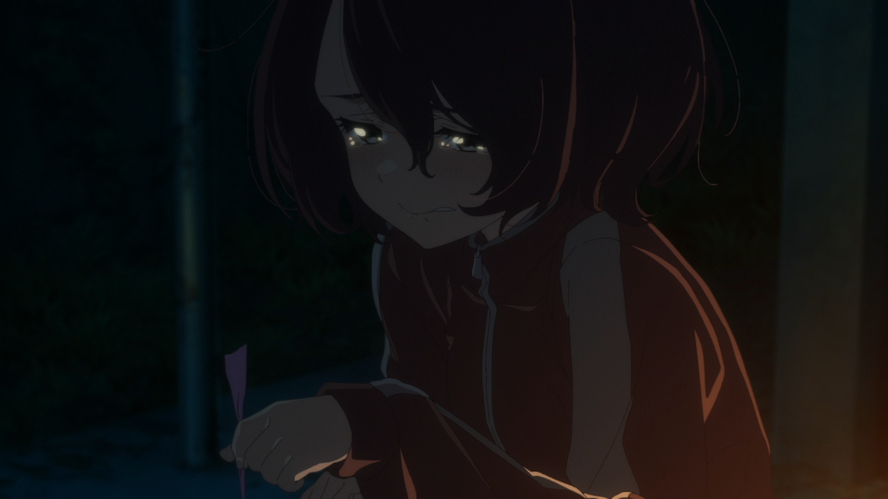
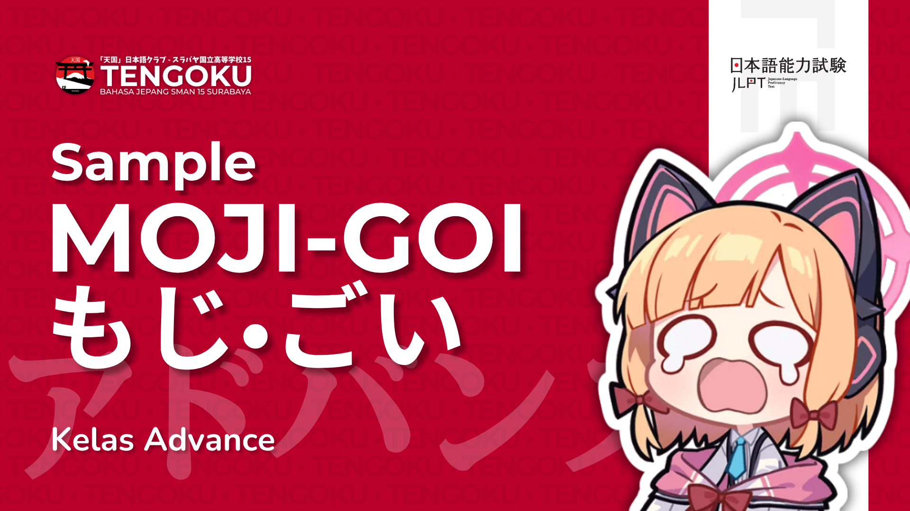
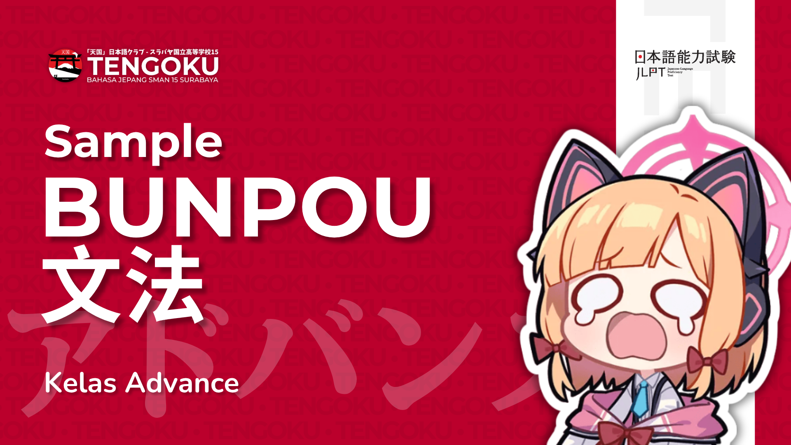
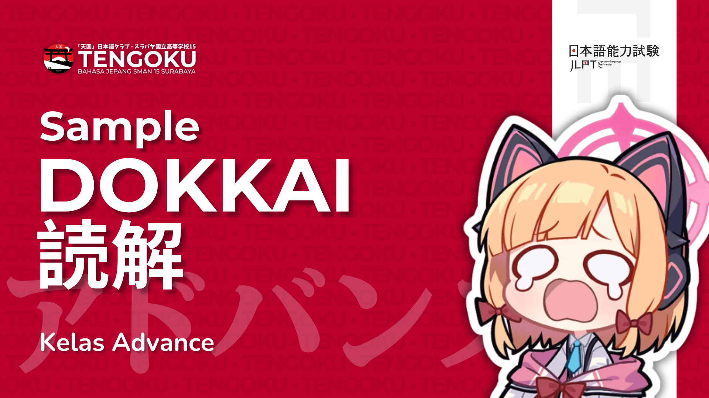
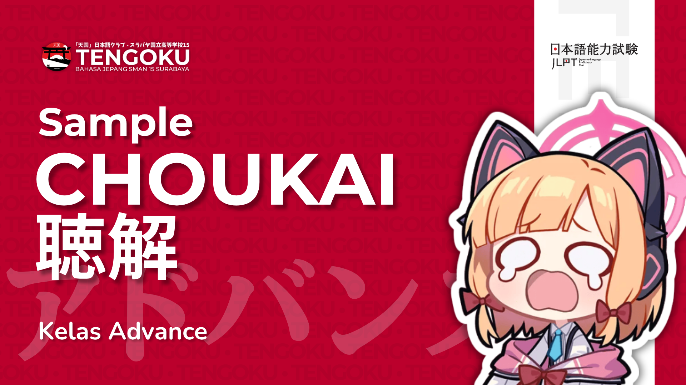
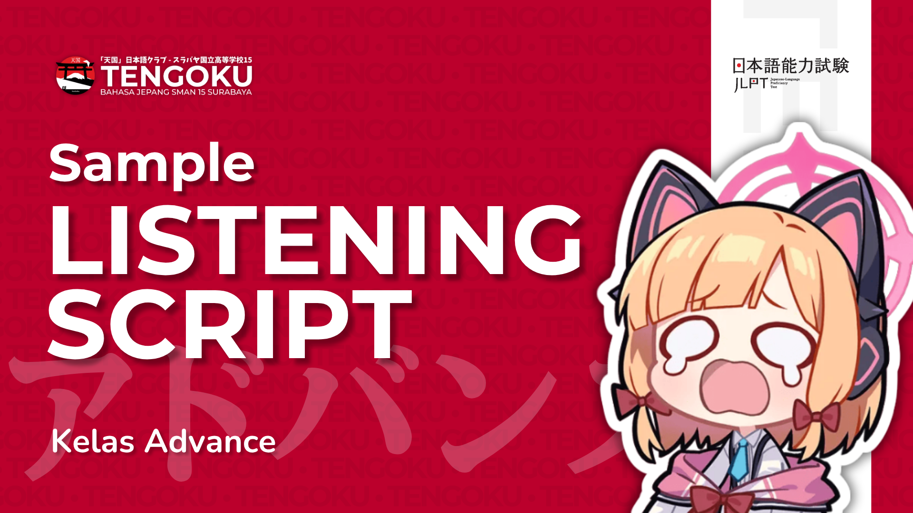
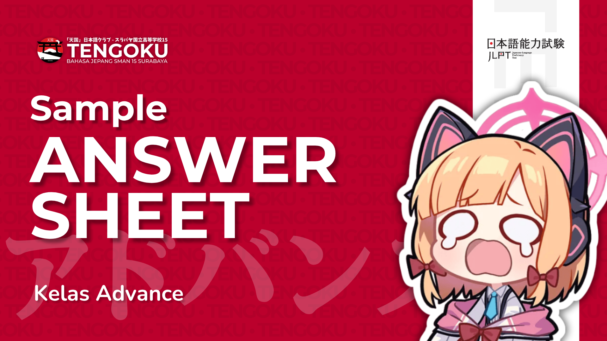

Kumpulan Kanji N5

「天国クラブ」ウェブサイト
Kelas Advance - Website Materi, kurikulum, dan komunitas dari Bahasa & Budaya Jepang SMAN 15 Surabaya
Kelas Advance
MAU BELAJAR INTENSE?
Ikuti pembahasan Minna no Nihongo bab per bab lewat video, tonton langsung dari sini.
Materi perkenalan awal Bahasa Jepang. Tata Bahasa dan Pola Kalimat dasar
Lihat Video LangsungMateri perkenalan lanjutan Bahasa Jepang (N5-N4). Tata Bahasa dan Pola Kalimat Lanjutan
Lihat Video LangsungKUMPULAN MATERI
Kumpulan Daftar Kanji N5-N4.
SAMPEL UJIAN
Kumpulan setiap jenis tes JLPT.






KUMPULAN MATERI
Kumpulan Materi diluar JLPT dan Minna no Nihongo.
FASILITAS ONLINE
Kekurangan, kelebihan, saran, atau pendapat apapun tentang Tengoku, sampaikan lewat formulir singkat kami. Responmu langsung masuk ke tim pengurus.
Isi Formulir Masukan ↗